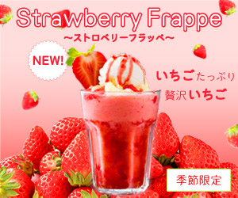

Works


ストロベリーフラッペバナー
目的:季節の旬のものを使った限定メニューで、常連客や新規顧客に興味を持ってもらい、集客を図る。
ターゲット:甘い物、可愛い物が好きな女性向け
担当範囲:デザイン
使用ツール:Illustrator、Photoshop
サイズ:300×250、160×300
制作のPOINT
ピンクと赤をベースにすることで女性が好む可愛らしい配色を表現しました。
いちごを周りにたくさん配置することで、いちご感をたっぷり出し、いちご好きの方に向けた商品になるよう考えました。